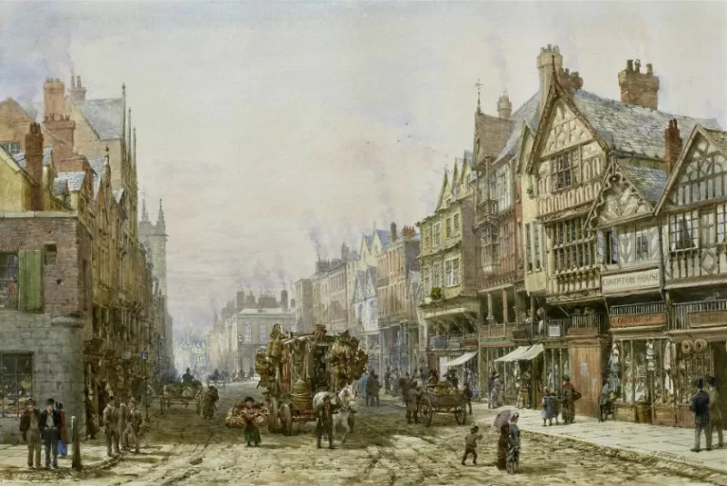

История Великобритании
История Соединенного Королевства — это долгий путь от древних племен до одной из самых влиятельных мировых держав.
Древний период и Римское завоевание
Первые люди появились на Британских островах еще в эпоху палеолита. С I века н.э. Британия стала провинцией Римской империи. Римляне построили города, дороги и знаменитую стену Адриана.
Средневековье
После ухода римлян в V веке началось англосаксонское завоевание. В 1066 году произошло нормандское завоевание — Вильгельм Завоеватель разбил англосаксов при Гастингсе. В 1215 году была подписана Великая хартия вольностей, ограничившая власть короля.
Тюдоры и Елизаветинская эпоха
При Генрихе VIII произошла английская Реформация — разрыв с католической церковью. Правление Елизаветы I стало золотым веком английской культуры (Шекспир, Марло) и временем разгрома испанской Армады.
Британская империя
К XIX веку Великобритания стала крупнейшей империей в истории — «империей, над которой никогда не заходит солнце». Викторианская эпоха (1837–1901) была периодом промышленной революции, расцвета науки и колониальной экспансии.
XX век и современность
После двух мировых войн империя постепенно распалась. В 1973 году Великобритания вступила в Европейское экономическое сообщество (позже ЕС), а в 2020 году завершился процесс выхода из Евросоюза (Brexit). Сегодня страна остается одной из ведущих экономик и культурных столиц мира.
